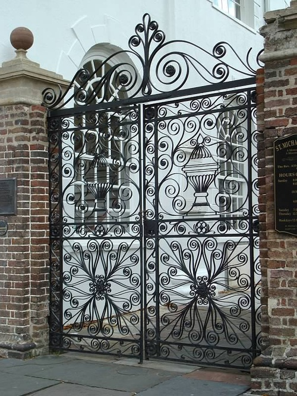

Wrought Iron Driveway Gates in Didsbury Greater Manchester England M20 6

Why Wrought Iron instead of a Wooden Gate or Metal Framed Entrance? That is merely a question of your personal preference, as well as the appearance you wish to attain. One of the feasible advantages of Wrought Iron gates is they do not obstruct your view out past them, or obstruct sunshine can be found in. Truthfully, it's not a question which is a lot better, more so, simply which option you will discover much more pleasing.
Get Gates Iron in Didsbury
Everything you need to know about Opening Day Dodgers press release details important information for Tuesday's Home Opener
Everything you need to know about Opening Day Dodgers press release details important information for Tuesday's Home Opener
Opening Week 2016 continues with Opening Day at Dodger Stadium on Tuesday, April 12. The Dodgers will face the Arizona Diamondbacks at 1:10 p.m. (LHP Patrick Corbin vs. RHP Kenta Maeda). Auto and stadium gates open early at 10:00 a.m.Opening Day pregame entertainment throughout the stadium begins at 10:00 a.m. and on-field pregame ceremonies begin at 12:15 p.m. Opening Day is sold out. The Dodgers encourage fans to carpool, arrive early and utilize transportation alternatives that serve Union Station and will connect them to the Dodger Stadium Express which will operate starting at 10:10 a.m.
Tuesday, April 12
| Dodger batting practice | 9:50 a.m. – 10:55 a.m. |
| Auto gates | 10:00 a.m. |
| Stadium gates | 10:00 a.m. |
| Entertainment throughout stadium | 10:00 a.m. – 1:10 p.m. |
| Diamondbacks batting practice | 11:00 a.m. – 11:55 a.m. |
| Opening Day pregame ceremonies | Approximately 12:15 p.m. |
| National anthem | 12:50 p.m. |
| Ceremonial first pitch ceremony | 12:55 p.m. |
| Game time | 1:10 p.m. |
Fans that arrive early will enjoy hours of entertainment throughout the stadium. DodgerVision will present Dodger features leading up to the start of on-field ceremonies. Live music will be offered throughout the stadium from 10:30 a.m. to 12:30 p.m. Angel City Dixie Band will entertain in the left-field reserve level, a Real 92.3 DJ in the right-field reserve level, DJ ADM in the right-field plaza, a 102.7 KIIS-FM DJ in the left-field plaza and a MYFM DJ on the top deck. The Budweiser Clydesdales will also make a special appearance beginning at 10:30 a.m., making stops around the inner parking circle throughout pregame.
Sam Harris, lead singer of X Ambassadors, will perform the national anthem. Representatives from the U.S. Army, Navy, Marine Corps and Air Force will present our nation’s colors. Members of the U.S. Armed Forces will unfurl a giant flag in center field. LAPD Air Support Division will conduct a formation flyover.
Opening Day will be highlighted by a special ceremonial first pitch honoring Hall of Famer Vin Scully, who is in his 67th and final season in the broadcast booth for the Dodgers. Pregame ceremonies will celebrate many of the great moments in Scully’s iconic career.
For the sixth consecutive season, the Dodgers will pay tribute to the men and women of our nation’s Armed Forces by honoring a “Military Hero of the Game.” Opening Day’s Military Hero of the game is retired U.S. Army/U.S. Coast Guard Sergeant Eddie Arambula of Torrance. Arambula joined the U.S. Army in 2002 and in March 2004 was deployed to Iraq in support of Operation Iraqi Freedom II. Arambula later joined the U.S. Coast Guard as Maritime Enforcement Specialist. In 2011, he deployed to Guantanamo Bay, Cuba, in support of Operation Enduring Freedom.
Broadcasting information
iHeartMedia Los Angeles and the Dodgers broadcast all games on AM 570 LA Sports, including Opening Day tomorrow. All Dodger games in Spanish are broadcast on Univision 1020 KTNQ.
SportsNetLA Opening Day pregame coverage starts at 11:30 a.m. with “Lead-Off L.A.,” followed by “Access SportsNet: Dodgers” from 12:00 p.m. to 1:00 p.m. “Access SportsNet: Dodgers” will include live coverage of Opening Day ceremonies at Dodger Stadium. AM 570 LA Sports will be broadcasting live in front of the Dodger dugout from 9:00 a.m. to 12:00 p.m. with Petros and Money and Leeann Tweeden. iHeart radio will provide music throughout the ballpark from 10:00 a.m. to game time featuring AM 570 LA Sports, 102.7 KIIS-FM, Real 92.3 and 104.3 MYFM DJs.
Fan services
Fan Service Stations are located in field level sections 52 and 53, loge level sections 152 and 153, reserve level sections 31 and 32 and top deck section 1 (between the Team Store and restrooms). Fan Services offers helpful information and services including first-game certificates, birthday buttons, the Anheuser-Busch Good Sport Designated Driver program, seat location wristbands to help prevent guests from getting lost, assistive listening devices, earplugs for guests and lost and found. Fan Service Representatives, uniformed in white polo shirts, will also be stationed at each gate throughout the season in order to assist guests with any questions. Fan Services can be reached on game day by calling (323) 224-2611 or by texting 69050 using keyword LADFAN followed by the guest’s location and comments.
Food and beverage offerings from Levy Restaurants
Levy Restaurants and the Dodgers have created an exciting new menu that offers an enhanced game-day experience for Dodgers fans with new fan-favorites and authentic local flavors. Executive Chef Jason Tingley has developed partnerships with purveyors, artisans and farms across the state to bring the best of California into Dodger Stadium. The menu offers creative twists and bold new signature dishes that blend global inspiration with tastes of local Los Angeles flavors made with locally sourced produce to create the ultimate dining experience.
New Dishes include:
- Gouda Kobe Burger: a refined twist of the classic burger Kobe beef cooked to perfection, topped with caramelized onions, pickle, smoked Gouda and our special dressing. Available at Elysian Park Grill.
- Dodger Dog topped with Pulled Pork: enjoy the iconic Dodger dog with heaps of smoke pull pork at the smokehouse stand located at the Think Blue Barbecue.
- Kings Hawaiian Dog: All-beef quarter-pound hot dog topped off with a pineapple salsa, served on King’s Hawaiian bread.
- Pastrami Burger: Quarter-pound beef patty on a potato bun topped with hot pastrami, drizzled stone-ground mustard served with Kettle Style home chips and a pickle spear.
- Shock Top Bratwurst: Spicy-pork bratwurst link infused with Shock Top beer served on a buttered-grilled lobster roll with caramelized onions and spicy brown mustard.
- Cast Iron Corn Bread and Fried Chicken: Made fresh daily cast-iron corn bread loaded with charred corn, jalapenos, Cheddar cheese and honey. Chicken is buttermilk fried chicken served with green tomatoes. This fan favorite can be found in the Stadium Club Bar with limited quantities per day.
Beverage highlights include:
- LA’s Michelada Beer: A local popular recipe that includes your favorite cerveza, with lime, clam and tomato juice, assorted spices and hot sauce served in a chili-rimmed cup. These cocktails are available at the Think Blue Bars, Blue Heaven on Earth Bar, #ITFDB Bar and additional carts throughout the stadium.
- Kirin’s Ichiban Frozen Draft: Chilled Kirin Ichiban Draft Beer is served with Kirin Itchiban beer foam that helps keep the beer chilled. This item is available at the Craft beer bars on the loge level, LA Michelada Bar and Think Blue Bar on the reserve level.
- Craft Beer: Craft draft and packaged beer are located throughout the stadium. For the widest selections, visit the craft-beer bars on the loge level. These locations feature 12 draft options that cover the local LA region and also feature a few Southern California favorites. The location also offers numerous packaged-beer options.
- Blue Heaven Margarita: This blue margarita is offered as a frozen cocktail and on the rocks. The Blue Heaven Margarita can be found at bars and portable carts throughout the stadium.
- Bud Light Self-Service Kiosk: The self-service kiosk will be available on the club level near the Vin Scully press box and by each of the overlook bars.
- Bud Light Ritas: Your choice of Bud Light Raz-Ber-Rita, Mang-O-Rita, Straw-Ber-Rita, Lemon-Ade-Rita or a Lime-A-Rita with a shot of Peligroso Tequilla served at the Bud Light Rita Bar on the loge level.
- Frozen Hard Cherry Coke: A classic frozen soda now being served as a frozen cocktail.
- Hard Root Beer: A refreshing summer time drink served as a cocktail.
- Coffee Bean Iced Blended: Enjoy a refreshing chocolate or vanilla iced-blended coffee served at Coffee Bean on the field level.
Fan Favorites (Concourse, Suites and Clubs):
- L.A. Extreme Bacon-Wrapped Dog: A ballpark legend, featuring a juicy 1/3 pound frank loaded with three strips of Applewood bacon, grilled pepper and onions, topped with mayonnaise and mustard.
- LA Taqueria’s Major League Nachos with Carne Asada: Seasoned carne asada on crispy tortilla chips topped with refried beans, nacho cheese sauce, house-made Pico de Gallo, pickled jalapenos and drizzled sour cream all served in a Dodger MLB helmet. This meal is truly made for the big leagues. The MLB helmet is available at all LA Taqueria locations throughout the stadium.
- LA Taqueria’s Carne Asada Fries: Seasoned carne asada on golden crisp fries topped with nacho cheese sauce, house made Pico de Gallo and drizzled sour cream. The specialty fry is available at all LA Taqueria locations throughout the stadium as well as Fries Fries Fries on the field level.
- BBQ Beef Brisket Sandwich: Slow-smoked BBQ Brisket served on a potato bun topped with Levy’s BBQ sauce.
- Street Style Elote: locally grown sweet corn, chipotle mayo, Cotija cheese, chile con limon and chopped cilantro
Los Angeles Dodgers Foundation (LADF)
The Los Angeles Dodgers Foundation (LADF) will launch a number of new and continued fundraisers for the 2016 season, giving fans an opportunity to support programs that benefit children and families in Los Angeles. Thirty-four silent auctions will feature more than 25 signed pieces of memorabilia from Dodger players, coaches and alumni. Auctions will take place in front of the Vin Scully press box on the club level. Opening Day items include a Clayton Kershaw autographed jersey, Corey Seager autographed baseball and Adrian Gonzalez autographed photo. The auction will end at 2:45 p.m. For the first time ever in-stadium merchandise stores (Top of The Park and Left Field Stores) will carry a 47 Brand LADF Logo Tee. Fans can also contribute by donating their RV, truck, motorcycle or cars by visiting . Ribbon-board messages will be available for all home games for a $75 donation. Dodgers Summer Youth Baseball Camp is selling fast. Registration for the New Balance Los Angeles Dodgers Foundation 5K and 10K Run and Kids Fun Run, presented by Gazillion Bubbles, to take place on Sunday, October 2 at Dodger Stadium is now live at . For more information on camp, all LADF programs and fundraising activity and to subscribe to the newsletter please visit and follow LADF on social media: Twitter (), Instagram () and Facebook ().
Merchandise
Dodger Stadium is debuting a new look in all New Era stores which include black-wall backdrops and highlighted new product. A new location for New Era is also now at loge section 150, a first-of-its-kind retail space which features new merchandise along with all on-field headware. The Dodgers are also launching a Star Wars collaboration with pennants, cups and lanyards and a Marvel movie-series lanyard. Opening Day merchandise includes a 2016 Opening Day T-shirt, Opening Day pin and Opening day baseball.
Parking and transportation tips
Uber is now the preferred ride of the Dodgers. With Uber, fans can get dropped off at any of the five entry gates during pregame. Once the game is over, fans can head to the dedicated Uber Zone in Lot 12 to meet their driver and be on their way in no time.
The Dodger Stadium Express offers two express services to Dodger Stadium: the Dodger Stadium Express Union Station and the Dodger Stadium Express South Bay. Dodger Stadium Express Union Station and Dodger Stadium Express South Bay services are free of charge with a Dodger game-day ticket. For Opening Day at Dodger Stadium, Dodger Stadium Express Union Station service will be provided every 10 minutes starting three hours prior to the start of the game and runs approximately every 30 minutes throughout the game. Fans traveling from Union Station without a ticket will pay a regular one-way fare of $1.75. The Dodger Stadium Express Union Station has two stops on site—in center field, behind the pavilions and at the top deck, lot P.
For Opening Day at Dodger Stadium, the Dodger Stadium Express South Bay service will be provided every 20 minutes starting three hours before game time, with the last bus leaving Harbor Gateway Transit Center at game time. Those traveling from the South Bay without tickets will be charged $2.50. Fans will drop off in Lot G by the right-field pavilion. Return service begins after the end of the 7th inning, with the last bus departing 45 minutes after the final out or 20 minutes after a post-game event.
Fans can also board the Union Station bus at Broadway and Cesar Chavez, a short walk from the Chinatown Gold Line Metro stop. Complete details on the Dodger Stadium Express services, route information and helpful tips from METRO can be found by visiting or by calling 323.GO.METRO.
Fans that choose to drive to Dodger Stadium are encouraged to participate in the Pre-Paid Parking Program presented by Jiffy Lube® by purchasing their parking in advance to assist in traffic flow and expedite movement through the auto gates. Advance parking prices are $10 and parking at the gate is $20. In addition, the Dodgers have added prepaid lanes to further expedite parking for fans purchasing parking passes in advance. To purchase your parking in advance, visit .
Publications
The 2016 Los Angeles Dodgers Yearbook is on sale at all Dodger team stores and at . This unique, 180-page publication offers a special 27-page tribute to the 10th anniversary of Clayton Kershaw signing with the Dodgers, a salute to Hall of Famer Vin Scully as he enters his 67th year behind the mic, a full preview of the 2016 season and much more.
The first 2016 issue of the new Dodger Insider magazine, featuring Dave Roberts on the cover, debuts tomorrow. Beginning this year, the Dodgers merged their previously separate Playbill and Dodger Insider magazines into one publication (at least 80 pages per issue) with a new edition available each homestand and one in October, 13 issues total. It will be distributed at autogates (one per vehicle) and via Fan Services for those who use alternate transportation. Fans that do attend games regularly, but still wish to subscribe can do so at. Dodger Insider magazine includes news, features, analysis, photos, games, stadium information and more.
Social media
The Dodgers’ official social media accounts will use official hashtags #ITFDB, “It’s Time for Dodger baseball,” #Dodgers, #WeLoveLA and #OpeningDayLA on Opening Day. #ITFDB content will be promoted across the Dodgers’ official social media platforms including: , , , , , and Snapchat (dodgersmlb).
Stadium enhancements
Several enhancements were made to Dodger Stadium this offseason. More standing room tables and stools were added to the top of the park, accessible to all fans, to give all a chance to take in picturesque Dodger Stadium. More memorabilia is now on display throughout Dodger Stadium, including added exhibits on the top deck, in the Press Box gallery on the club level and on the field level at the entries near the right and left-field bullpen bars and at the baseline clubs. Several upgrades to the electrical infrastructure throughout Dodger Stadium were also made which increases lighting throughout the stadium, exterior stairs and pedestrian improvements to guide fans safely through the parking lots and along the routes fans take when they use the Dodger Stadium Express.
The newly rebranded BMW Club Suites, a setting to entertain clients, potential investors, reward employees or enjoy an evening out with friends and family, accommodate 15-30 persons, include 8-10 complimentary preferred parking passes and certain locations are packaged with a complimentary food and non-alcoholic starter package. The BMW Club Suites will feature two BMW vehicle displays where fans will have the opportunity to enter a Dodger road trip sweepstakes.
The Emirates Lounge is a newly designed space for accommodating larger groups of 30-70 guests. Well-appointed and modern, the Emirates Lounge serves to entertain clients, reward employees or celebrate special occasions. Ten to 20 preferred parking passes and a complimentary food and beverage starter package is also included.
Offering the widest and most comfortable seats at Dodger Stadium, the Baseline Club seats are located on the field level from sections 26-44 on the first-base side and sections 27-45 on the third-base side. Ticket holders have access to the exclusive Ketel One Baseline Club on the first-base side and the newly rebranded, Don Julio Baseline Club on the third-base side of the stadium. The clubs feature complimentary food and non-alcoholic beverages, full bar, in-seat service, private restrooms and restaurant style seating.
The Lexus Dugout Club is the most exclusive club at Dodger Stadium and offers the best seats in the house. With new enhancements for the 2016 season, the Lexus Dugout Club is an all-inclusive experience and features access to private bars, private restrooms, in-seat service and restaurant-style seating featuring unlimited complimentary high-end Levy Restaurant food options and non-alcoholic beverages.
Dodgers’ Premium Sales can be reached at 866-DODGERS or via email at .
Ticket sales information
The Dodgers also announced a new mini plan, a special 11-game mini plan that will offer fans the opportunity to secure tickets to every game featuring a tribute to Vin Scully, in addition to every game after Opening Day, and is currently the only way to get tickets to attend Vin Scully Appreciation Night on September 23. More details can be found by visiting.
Dodger fans can also look forward to six promotional dates in April. An adult hooded sweatshirt presented by Bank of America will be the giveaway on Wednesday, April 13 (7:10 p.m. vs. Arizona). Jackie Robinson Day is Friday, April 15 (7:10 p.m. vs. San Francisco) and will feature an adult replica Jackie Robinson jersey presented by Bank of America. A knit cap presented by The Coffee Bean & Tea Leaf will be the giveaway Saturday, April 16 (6:10 p.m. vs. San Francisco). Clayton Kershaw bobblehead presented by Security Benefit is the giveaway on Monday, April 25 (7:10 p.m. vs. Miami). Fans will receive a fleece blanket presented by LG on Wednesday, April 27 (7:10 p.m. vs. Miami). The final promotional night in April will be Saturday, April 30 (6:10 p.m. vs. San Diego) and fans will receive a Justin Turner Chia Pet presented by Cedars-Sinai. Tickets remain on sale for all of these April promotional dates, as well as all regular season home games, excluding Opening Day, at or by calling 866-DODGERS.
Upcoming ticket packages include USC Night Tuesday, April 26 (7:10 p.m. vs. Miami) and UCLA Night Thursday, April 28 (7:10 p.m. vs. Miami). For a complete list of special events and theme games, please visit . For more information on purchases of 30 tickets or more please email . Fans can sign up for the 2016 season ticket waitlist and complete details on 2016 season tickets can be found by visiting .
Why Wrought Iron as opposed to a Wooden Entrance or Metal Mounted Gate? One of the possible advantages of Wrought Iron gates is they do not block your view out beyond them, or obstruct sunshine coming in. It is certainly nice for your brand new Wrought Iron gate to function as well as look stunning the day it's set up, but if the products used are not the finest, our recently added street charm might be short lived.
Wrougnt Iron Gates near Didsbury Wrougnt Iron Gates near Didsbury